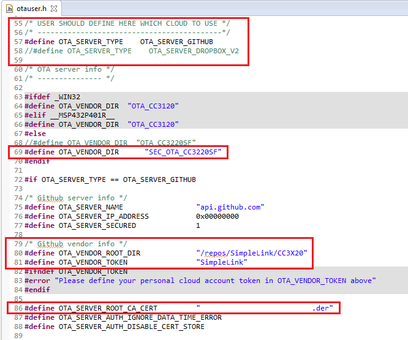
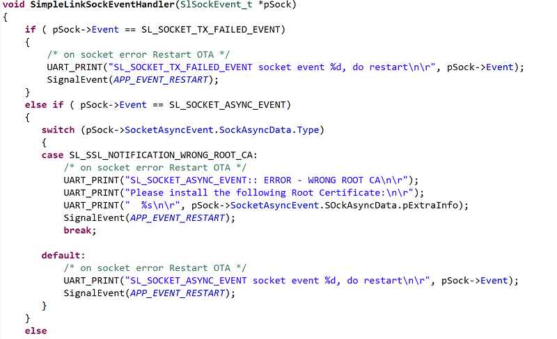

Introduction
This workshop demonstrates how to use the SimpleLink™ Wi-Fi® Over-The-Air (OTA) library. The library can be used to wirelessly load and install software updates from a cloud server. A software update may contain any combination of application code, firmware, and user files.
This workshop will start with an overview of the OTA mechanism and then walk through the bring up of two OTA examples:
- Using the Cloud OTA example to load and update a pre-built image
- Preparing an OTA update, uploading it to the cloud, and loading it with the Cloud OTA example.
At the end of this training, the audience should be able to:
- Understand the OTA process and the SimpleLink Wi-Fi solution
- Configure, build, and execute the SimpleLink
cloud_otaapplication and OTA library (ota) on the CC3220 LaunchPad - Create an OTA update image and upload it to a CDN (Content Delivery Network) Server
Prerequisites
Completed material
Software
- Code Composer Studio v7.4 or later
- Must have SimpleLink CC3xxx Wireless support
- Make sure that CCS is using the latest updates: Help → Check for Updates
- CC3220 SDK v1.60.00.04 or later
- UniFlash v4.2.1.15 or later.
- Terminal emulator program such as TeraTerm or PuTTY
Hardware
- CC3220S or CC3220SF LaunchPad (CC3220S-LAUNCHXL or CC3220SF-LAUNCHXL)
- 1x Micro-USB cable (included with LaunchPad/BoosterPack)
- 802.11b/g/n (2.4-GHz) Wireless Access Point (AP)
- Smartphone with Wi-Fi Starter Pro Mobile Application
OTA Overview
OTA Concept
- OTA (Over-The-Air) update is an efficient way of wirelessly distributing firmware updates or application upgrades.
- An OTA Update mechanism enables users to easily and securely update the software on their device using Wi-Fi. This involves two simple procedures:
- A vendor stores an OTA update on a CDN (Content Delivery Network) server.
- The endpoint devices with an OTA-enabled application load and install the new update.
- An OTA-enabled application must support all of the following actions:
- Polling the CDN (Content Delivery Network) server for new updates
- Downloading the new image
- Installing the image on the flash file system in a secured and fail-safe manner (the new image becomes a "candidate")
- Committing the image after it is validated (making it "operational")
- The SimpleLink OTA library offloads the above OTA actions and provides a simple API for the application.
OTA System Diagram
API: Application Program Interface
CDN: Content Delivery Network
MCU: Microcontroller Unit
NWP: Network Processor
OTA: Over The Air
PCB: Printed Circuit Board
- CDN (Content Delivery Network): Globally distributed network of proxy servers deployed in multiple data centers. The goal of a CDN is to serve content to end-users with high availability and high performance. Examples would be Dropbox or GitHub.
- OTA library: Offloads the OTA actions (such as polling the server, downloading the updates and installing them in the local flash) while exposing a simple API.
- OTA-enabled Application: Triggers the OTA library and respond to OTA events. The application will take decisions whether to accept or decline an update (usually based on timestamp) and whether to commit or rollback the already installed image (based on a sanity check).
SimpleLink OTA Library (ota)
- The OTA library implements a simple HTTP client that connects to CDN server (through
CdnVendorandOtaHttpClientmodules). - The HTTP client can be configured as:
- Non Secured (connects to CDN running HTTP Server)
- Secured (HTTPS server) using server authentication (by default)
- Domain Name verification (default) or without server authentication.
- The OTA library supports the following cloud CDN vendors:
- Github (demonstrated in the first demo)
- Dropbox (demonstrated in the second demo)
- Custom
- The library defines a structure for the OTA image in a tar file. The UniFlash ImageCreator tool can be used to create an OTA tar file so that the OTA library will be able to parse the loaded content and install it on local flash file system in secure and fail-safe manner (through the
OtaArchiveandOtaJsonmodules) - The OTA library is provided as a static library project with full source code to enable user customizations.
OTA Library API
The OTA library exposes very simple API set:
OTA_init(): Initializes the OTA library. The host application should define a global buffer for the use of the OTA library and provide this buffer while it initiates the OTA.OTA_set(): Sets an OTA library parameter. Used to set CDN Server information and to update the status of the loaded image (DECLINE,ACCEPT,COMMITorROLLBACK).OTA_get(): Retrieves an OTA library parameters, e.g.IS_ACTIVEorVERSIONSinfo (current image version and new update version).OTA_run(): Trigger the OTA library state machine. This will trigger OTA polling, download, etc. It should be called repeatedly until it gets theDOWNLOAD_DONEreturn code.
This API set is compatible with both non-OS and OS-based platforms.
OTA Sample Application
- The first role of an OTA-enabled application is to verify and commit a "candidate" image that was previously installed to local flash.
- Once the device is connected to the network and can successfully PING to the local gateway, the application assumes the image is okay.
- If the OTA state is
PENDING_COMMIT, the application will commit the image.
- The second role of the application is to look for a new update.
- Server info is defined in compile time (in
otauser.h). - App repeatedly calls
OtaRun()until OTA process is completed. - App decides to accept or decline a new update based on its timestamp.
- An accepted update will be written to flash as a "candidate" which will be verified after the MCU gets reset.
- Server info is defined in compile time (in
Loading A Pre-Built OTA Image
The following section will walk you through the steps needed to run the cloud_ota sample application using the CC3220 LaunchPad. This example is run using the cloud_ota_CC3220SF_LAUNCHXL_tirtos_ccs source code example found within the CC3220 SDK. These instructions should work for the FreeRTOS example as well. This demonstration uses the OTA sample application to load and install a pre-built image that is located on a Github CDN server. It focuses on the configuration of the OTA application.
Task 1: Preparing the OTA application
In CCS, import the
cloud_ota_CC3220SF_LAUNCHXL_tirtos_ccsexample (simplelink_cc32xx_sdk_x_xx_xx_xx/examples/rtos/CC3220SF_LAUNCHXL/demos/cloud_ota/tirtos/ccs). You also must import theotaproject found insimplelink_cc32xx_sdk_x_xx_xx_xx/source/ti/net/ota/ccs. This is the supporting OTA library.CC3220S LaunchPad
If you are using a CC3220S LaunchPad, assume all given folder and code instructions can be changed from
CC3220SFtoCC3220S. For example, here you should import thecloud_ota_CC3220S_LAUNCHXL_tirtos_ccsexample fromsimplelink_cc32xx_sdk_x_xx_xx_xx/examples/rtos/CC3220S_LAUNCHXL/demos/cloud_ota/tirtos/ccs. Theotalibrary project works for both LaunchPads.In
otauser.hof theotaproject, update the CDN server parameters:- Use the following parameters for accessing the pre-defined image on the Github server:
#define OTA_SERVER_TYPEOTA_SERVER_GITHUB#define OTA_VENDOR_DIR"SEC_OTA_CC3220SF"
- The following definitions are under GITHUB section:
#define OTA_VENDOR_ROOT_DIR"/repos/SimpleLink/CC3X20"#define OTA_VENDOR_TOKEN"SimpleLink"
- We will find the correct value for
OTA_SERVER_ROOT_CA_CERTin the next task. Optionally, you may uncomment the following definition to enable the OTA library traces:
#define SL_ENABLE_OTA_DEBUG_TRACES

- Use the following parameters for accessing the pre-defined image on the Github server:
Update the JSON buffer size for storing the long GitHub URL. In the
otaproject, open theOtaJson.cfile and update theMAX_METADATA_FILENAMEdefinition to reserve room for the long Github URL name.If you see yellow warning icons under the
OTA/CdnVendors/folder in yourotaproject, you'll need to update the path for each of the files before the project will compile.- In your
otaproject, open the properties (Left click → Properties) and navigate under Resource to Linked Resources and the Linked Resources tab. - For each file with an invalid location, select the file and press the Edit button to replace the
PROJECT_LOCproject variable withORIGINAL_PROJECT_ROOT. Be sure to press OK to save your changes. The warning symbol next to each file should disappear and you will be able to compile the library.
- In your
You will need to link your
cloud_otaapplication to your newotalibrary. In thecloud_otaproject, go to Properties → Build → ARM Linker → File Search Path → Include library file... and change theota.areference to${WORKSPACE_LOC}/ota/Release/ota.a. This will link to the OTA library built in your CCS workspace.Rebuild the
otaproject then rebuild thecloud_otaproject.Rebuilding the OTA library
You will need to rebuild the
otalibrary andcloud_otaexample after every change tootauser.h.
Task 2: Finding a Root Certificate
In this step, we will find the Certificate Common Name necessary to pass GitHub's SSL authentication. We will install this certificate (in DER format) as a user file in the device flash. To find the most up-to-date Root CA certificate, add the following code in the
else-ifstatement ofSimpleLinkSockEventHandlerincloud_ota.c.switch (pSock->SocketAsyncEvent.SockAsyncData.Type) { case SL_SSL_NOTIFICATION_WRONG_ROOT_CA: /* on socket error Restart OTA */ UART_PRINT("SL_SOCKET_ASYNC_EVENT: ERROR - WRONG ROOT CA\n\r"); UART_PRINT("Please install the following Root Certificate:\n\r"); UART_PRINT(" %s\n\r", pSock->SocketAsyncEvent.SockAsyncData.pExtraInfo); SignalEvent(APP_EVENT_RESTART); break; default: /* on socket error Restart OTA */ UART_PRINT("SL_SOCKET_ASYNC_EVENT socket event %d, do restart\n\r", pSock->Event); SignalEvent(APP_EVENT_RESTART); break; }cloud_ota.c :: SimpleLinkSockEventHandler() - Else-if statement
It should now look like this:
Error code -688
In the case you do not have the correct CA certificate (or use a different CDN server), the HTTPS connection setup will fail. If the HTTPS connection to the CDN server fails due to an incorrect root certificate, the return value will be -688. You will need to find and install the right certificate.
Open a terminal emulation program and select the XDS110 Class Application/User UART port.
UART Configuration
Baud rate: 115200
Data: 8 bit
Parity: None
Stop: 1 bit
Flow control: NoneRebuild the
otaproject then rebuild thecloud_otaproject. Run thecloud_otaapplication using the CCS Debugger. The example begins by starting the device in station mode and looks for an available network.The screen capture demonstrates the case that a device cannot find a known access-point and enters the provisioning mode. For more information on provisioning, see the Wi-Fi Provisioning training.
Issues with CCS Debugger
Your device will need to be in Development mode to use the CCS debugger. For more details on this, see the CC3220 Getting Started Guide.
The screenshot below shows a successful AP connection, followed by successful PING sessions. Now you can press button 2 (SW2) on the board to trigger the OTA process.
Note that the following log was taken after
SL_ENABLE_OTA_DEBUG_TRACESwas enabled (inota/ota_user.h) so it includes extra OTA messages.When the LaunchPad attempts the OTA process, you will see an error message similar to the following screenshot. Make note of the complete name printed after
Please install the following Root CA Certificate:.You can search this certificate name online and download it, or you can find it using your browser's settings. For example in Chrome, go to Settings → Advanced → Manage Certificates → Trusted Root Certification Authorities. If your browser has navigated to github.com before, search in the list for the certificate name we printed to the terminal earlier. Export it in DER format.
Update the
OTA_SERVER_ROOT_CA_CERTdefinition inota/otauser.h. This is similar to the step we completed in task 1.
Task 3: Complete an OTA Update
Create a new CC3220 UniFlash ImageCreator project and set the CC3220 to Development mode. Add the entire "dummy" certificate chain (i.e.
dummy-trusted-cert,dummy-trusted-ca-certanddummy-root-ca-cert), playground Trusted Root-Certificate Catalog, and latest service pack. This is shown in detail in section 2.4 and steps 1-4 of section 2.4.1 of the SimpleLink Wi-Fi CC3220 Getting Started Guide.Add the Root CA certificate (in DER format) that we found earlier as a user file.
Add the demo OTA public key certificate
dummy_ota_vendor_cert.deras a user file. This is available insimplelink_cc32xx_sdk_x_xx_xx_xx/tools/cc32xx_tools/ota-example-cert/. This certificate will be used to authenticate a pre-built secure OTA image signed by the corresponding private key for this lab.The default certificate name is defined by
OTA_CERTIFICATE_NAMEinOtaArchive.c. (If a different certificate is used, theOTA_CERTIFICATE_NAMEdefinition should be updatedWe will learn how to generate a key pair and use UniFlash to sign the OTA image with the private key in the next section of this lab: Preparing an OTA Image.
Connect the LaunchPad and Generate and Program the image.
Rebuild the
otaproject then rebuild thecloud_otaproject. Open a terminal emulation program as before. Run thecloud_otaapplication using the CCS Debugger.The capture below shows the successful completion of OTA process. Note that the screenshot below skipped most of the OTA messages (dealing with CDN server connection, downloading content, parsing and installing it). This log below shows the flash programming messages, the platform reset, and the activation of the newly programmed image (this example pre-built image contains a version of the
OTA_NONOSapplication). After the first successful ping session, the temporary image gets committed.Results
- The OTA tar file name contains the timestamp (date and hour) of its creation. Only an update with a newer timestamp than the one currently stored in flash will be loaded and installed.
The first OTA update after using UniFlash ImageCreator will always work since it does not program any timestamp.
Preparing An OTA Image
The following section will discuss the steps needed to run the Cloud OTA sample application using the CC3220 LaunchPad. This example is run using the cloud_ota_CC3220SF_LAUNCHXL_tirtos_ccs source code example. This demonstration is focused on creation of an OTA image.
- Compiling an MCU image and packaging it within an OTA update (tar file)
- Uploading OTA content to user account on a CDN server (DropBox)
- Configuring the
cloud_otawith the user account parameters
Task 4: Compiling and Creating the OTA Image
This task focuses on the generation of an OTA image. The image will contain an updated MCU application which will be based on the cloud_ota application.
In
cloud_ota.h, update theAPPLICATION_NAMEdefinition to"OTA APP (EX-2 Image)"as shown below and rebuild the project. We will only change the application name (the name will help us differentiate between the current app and the updated one).Create a new CC3220 UniFlash ImageCreator project. Add the entire "dummy" certificate chain (i.e.
dummy-trusted-cert,dummy-trusted-ca-certanddummy-root-ca-cert), playground Trusted Root-Certificate Catalog, and latest service pack. This is shown in detail in section 2.4 and steps 1-4 of section 2.4.1 of the SimpleLink Wi-Fi CC3220 Getting Started Guide.Add any additional user files. You will need a certificate for the CDN server following the steps in task 2 and 3. For this demo, we are using DropBox.
Add your newly compiled binary (
cloud_ota_CC3220SF_LAUNCHXL_tirtos_ccs.bin) as a MCU image. You can find this binary in your workspace (<workspace>/cloud_ota_CC3220SF_LAUNCHXL_tirtos_ccs/Debug/)Signing the MCU Image on a secure device
For detailed steps, see the CC3220 Getting Started Guide.
- Be sure the Failsafe, Secure and Public Write flags are set
- Use
dummy-trusted-cert-keyas the private key file - Use
dummy-trusted-certas the certification file name
Go to Generate Image and select Create OTA.
You will need to select a OTA Private Key File Name. The private key will be used to sign the image.
You may use the demo-only private key which is available in the SDK:
simplelink_cc32xx_sdk_x_xx_xx_xx\tools\cc32xx_tools\ota-example-cert\dummy_ota_vendor_key.der.Or you can create your own private and public key that uses elliptic curve cryptography (ECDSA SECP256R1). This can be done using the following openssl commands:
Generate the private key
openssl ecparam -name prime256v1 -genkey -param_enc explicit -out ota_vendor_key.pemGenerate the public certifcate
openssl req -new -x509 -key ota_vendor_key.pem -out ota_vendor_cert.pem -days 730You may answer the Certificate Signing Request (CSR) questions or simply choose the defaults.
The tool will sign the binary image and will generate a tar file in a format defined by the OTA library. The timestamp for the image will be automatically generated as well.
Task 5: Creating and Configuring the CDN server
You will need a CDN (Dropbox) account for this demo. Follow the steps in chapter 8.1 of the CC3x20 OTA Application Report to create a Dropbox application. Go through steps 1-6 in the application report, and drop the newly created tar file in the OTA vendor directory (called
OTA_R2_MCU_FLASH).In "ota/otauser.h", update the CDN server parameter. This example uses the Dropbox account:
Use the following CDN server parameters:
#define OTA_SERVER_TYPEOTA_SERVER_DROPBOX_V2#define OTA_VENDOR_DIR"OTA_R2_MCU_FLASH"
The following is defined under the
DROPBOXsection:#define OTA_VENDOR_TOKEN"<Dropbox generated access token>"
Set
OTA_SERVER_ROOT_CA_CERT(see task 2).
Task 6: Running the OTA Application
Open a terminal emulation program such as TeraTerm and select the XDS110 Class Application/User UART port.
UART Configuration
Baud rate: 115200
Data: 8 bit
Parity: None
Stop: 1 bit
Flow control: NoneBefore rebuilding the application, change the OTA version (
APPLICATION_NAMEincloud_ota.h) back toOTA APP(see task 4, step 1). Build and run the project.Verify the successful execution on the debug terminal.
Note that after a successful OTA sequence the new image should be triggered. It can be monitored through the application name.
Further Reading
After experiencing the OTA application with the CC3x20 device, see the following resources for further assistance in development:
- CC3x20 Programmer's Guide: This guide contains information on how to use the SimpleLink API for writing WLAN-enabled applications. Please refer to chapter 8 (Secure File System) for important details on the OTA image bundle attributes.
- CC3x20 OTA Application Report: This document describes the OTA library for the SimpleLink Wireless MCUs, and explains how to prepare a new cloud-ready update to be downloaded by the OTA library.
- UniFlash ImageCreator User's Guide: The Imaging tool manually stores files on the external serial flash. It is also includes the capability of creating an OTA image (in a tar file) that is ready to be stored in a CDN. Image may include the SimpleLink firmware patch file and any configuration files, security certificates, web pages, and so forth.
Technical support
For any questions, please search on the TI SimpleLink Wi-Fi E2E Forum
This work is licensed under a Creative Commons Attribution-NonCommercial-NoDerivatives 4.0 International License.